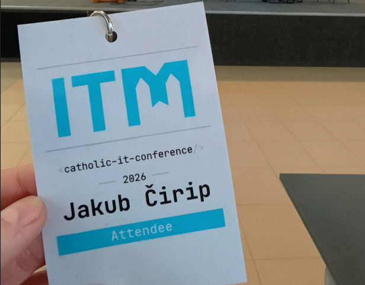
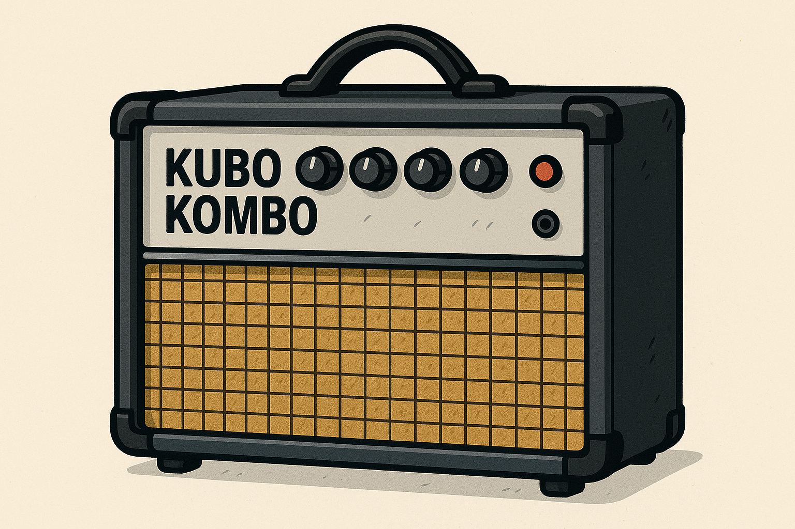

All Blog Posts
Thoughts, guides, and updates from my technical journey.

March 8, 2026
Medjugorje ITM 2026 Edition
My experience from the ITM 2026 edition in Medjugorje...
Read article →
February 10, 2026
Sudoku game recovery
How I implemented a recovery system for my Sudoku game...
Read article →

January 7, 2026
Kubo Kombo release!
Finally, the Kubo Kombo tool is out! A simple and useful guitar combo...
Read article →
May 13, 2025
Linux Kernel Intro
Continuing the journey with core concepts of module compilation...
Read article →
April 25, 2025
Understanding Linux Kernel
An introductory dive into how the Linux kernel operates...
Read article →